승강기기사 (2018-03-04 기출문제)
1과목: 승강기 개론
1. 카 바닥의 전 · 후 · 좌 · 우의 수평을 유지시키는데 사용되는 부품은?
- 카틀
- 상부체대
- 하부체대
- 경사지지 봉(Brace Rod)
(정답률: 80%)

2. 승강기의 조작방식 중 일반적으로 가장 많이 사용하는 방식은?
- 카스위치식
- 단식자동방식
- 승합전자동식
- 하강승합전자동식
(정답률: 81%)
3. 록다운 비상정지장치를 설치해야 하는 엘리베이터의 속도기준으로서 옳은 것은?
- 정격속도 1⑤ m/min 초과
- 정격속도 180 m/min 초과
- 정격속도 210 m/min 초과
- 정격속도 240 m/min 초과
(정답률: 72%)
4. 에스컬레이터의 경사도는 일반적인 경우 최대 몇 도 이하로 하여야 하는가?
- 20
- 30
- 40
- 50
(정답률: 82%)
5. 즉시 작동식 비상정지장치가 작동할 때 정지력과 거리에 대한 그래프로 옳은 것은?
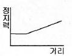
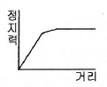
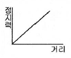
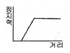
(정답률: 77%)
6. 카측 로프가 매달고 있는 중량과 균평추측의 로프가 매달고 있는 중량의 비는?
- 균형비
- 부하율
- 트랙션비
- 밸러스율
(정답률: 85%)
7. 엘리베이터용으로 일반 와이어로프에 비해 소선의 탄소량이 적고, 경도가 낮으며 파단강도가 135kgf/mm2인 와이어로프의 종은?
- E종
- A종
- B종
- G종
(정답률: 71%)
8. 로프가 느슨해지면서 로프의 장력을 검출하여 동력을 끊어주는 안전장치는?
- 정지스위치
- 리미트스위치
- 록다운 비상스위치
- 권동식 로프이완 스위치
(정답률: 84%)
9. 유압식엘리베이터에 사용되는 체크밸브의 역할은?
- 기름을 하강방향으로만 흐르게 한다.
- 기름에 이물질이 있는지를 체크하여 동작한다.
- 실린더의 기름을 파워 유니트로 역류하는 것을 방지한다.
- 기름을 한쪽 방향으로만 흐르게 하고 정전이나 그 이외의 원인으로 토출 압력이 떨어져서 실린더내의 오일이 역류하여 급강하하는 것을 방지한다.
(정답률: 79%)
10. 카가 완전히 압축된 완충기 위에 있을 때 피트에는 최소 얼마 이상의 장방형 블록을 수용할 수 있어야 하는가?(관련 규정 개정전 문제로 여기서는 기존 정답인 2번을 누르면 정답 처리됩니다. 자세한 내용은 해설을 참고하세요.)
- 0.5m×0.6m×0.8m
- 0.5m×0.6m×1.0m
- 0.4m×0.5m×0.8m
- 0.4m×0.5m×1.0m
(정답률: 72%)
11. 케이지의 실속도와 지령속도를 비교하여 사이리스터의 점호각을 바꿔 유도전동기의 속도를 제어하는 방식은?
- 교류 궤환제어
- 정지 레오나드방식
- 교류 일단 속도제어
- 교류 이단 속도제어
(정답률: 62%)
12. 카의 정격속도가 60m/min 인 스프링 완충기의 최소행정(mm)은?
- 64
- 100
- 125
- 150
(정답률: 55%)
13. 에스컬레이터의 스커트가 스텝 및 팔레트 또는 벨트 측면에 위치한 곳에서 수평 틈새는 각 측면에서 최대 몇㎜ 이하이어야 하는가?
- 3
- 4
- 5
- 6
(정답률: 67%)
14. 카 무게가 800㎏이고, 적재하중이 600㎏인 승객용 엘리베이터에서 오버밸러스율을 45％로 할 경우, 균형추 무게는 몇 ㎏ 이 되는가?
- 960
- 1070
- 1130
- 1400
(정답률: 71%)
15. 도어시스템 중 모터의 회전을 감속하고 암이나 로프 등을 구동하여 도어를 개폐하는 장치는?
- 도어 머신
- 도어 클로저
- 도어 인터록
- 도어 보호장치
(정답률: 73%)
16. 소방운전 제어에 대한 설명으로 틀린 것은?
- 카 문닫힘안전장치는 무효화되어야 한다.
- 소방수가 임의의 층에서 직접 소방운전상태로 들어갈 수 있다.
- 2개 이상의 카 운행 층이 동시에 등록되는 것은 가능하지 않아야 한다.
- 엘리베이터 카를 등록된 층으로 운행시키고 등록된 층에 문이 닫힌 상태로 정지시켜야 한다.
(정답률: 56%)
17. 유압 파워 유니트와 유압잭의 압력배관 중간에 설치하여 보수점검 또는 수리를 할 때 유압잭에서 불필요하게 작동유가 흘러나오는 것을 방지하는 것은?
- 체크밸브
- 스톱밸브
- 사이렌서
- 하강용 유량제어밸브
(정답률: 79%)
18. 90m/min인 권상 구동식 엘리베이터에서 균형추가 완전히 압축된 완충기 위에 있을 때 카 가이드레일 길이는 최소 몇 m 이상 연장되어야 하는가?(오류 신고가 접수된 문제입니다. 반드시 정답과 해설을 확인하시기 바랍니다.)
- 0.135
- 0.178
- 1.135
- 1.178
(정답률: 56%)
19. 비상용 엘리베이터는 정전 시 최대 몇 초 이내에 운행에 필요한 전력용량을 보조 전원공급장치에 의해 자동으로 발생시켜야 하며 또한 최소 몇 시간 이상 운행할 수 있어야 하는가?
- 40초, 1시간
- 40초, 2시간
- 60초, 1시간
- 60초, 2시간
(정답률: 79%)
20. 스트랜드의 꼬는 방향과 로프의 꼬는 방향이 반대이고, 소선과 외부의 접촉면이 짧아 마모에 으한 영향은 어느 정도 많지만, 꼬임이 잘 풀리지 않으므로 일반적으로 많이 사용되는 로프 꼬임방식은?
- 보통 Z꼬임
- 보통 S꼬임
- 랭그 Z꼬임
- 랭그 S꼬임
(정답률: 81%)
2과목: 승강기 설계
21. 엘리베이터의 배치계획 시 고층용과 저층용이 마주보는 2뱅크로 배치되어 있는 엘리베이터의 경우 대면거리는 최소 몇 m 이상인가?
- 3
- 4
- 5
- 6
(정답률: 63%)
22. 전기적 비상운전 제어에 관한 설명으로 틀린 것은?(관련 규정 개정전 문제로 여기서는 기존 정답인 2번을 누르면 정답 처리됩니다. 자세한 내용은 해설을 참고하세요.)
- 비상운전 제어 시 카 속도는 0.63m/s 이하이어야 한다.
- 전기적 비상운전은 버튼 순간적인 누름에 의해서도 작동되어야 한다.
- 전기적 비상운전 스위치는 파이널 리미트스위치를 무효화 시켜야 한다.
- 전기적 비상운전의 기능은 점검운전의 스윙치 조작에 무시되어야 한다.
(정답률: 67%)
23. 일반적으로 엘리베이터 기계실의 기계대를 콘크리트로 할 경우 안전율은 최소 얼마 이상인가?
- 4
- 5
- 6
- 7
(정답률: 73%)
24. 카 비상정지장치가 작동될 때, 부하가 없거나 부하가 균일하게 분포된 카의 바닥은 정상적인 위치에서 최대 몇％를 초과하여 기울어지지 않아야 하는가?
- 3
- 4
- 5
- 6
(정답률: 76%)
25. 즉시 작동형 비상정지장치의 성능시험 시 흡수할 수 있는 총에너지를 구하는 식을 옳게 나타낸 것은? (단, K: 비상정지장치의 흡수에너지(N∙m),(P+Q)1비상정지장치의 허용총중량(Kg), h: 낙하거리(m), gn: 중력가속도(9.8m/s2)
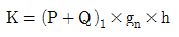
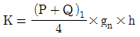
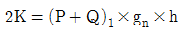
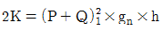
(정답률: 50%)
26. 모듈(MODULE)이 4인 스퍼 외접기어의 잇수가 각각 30,60 이라고 할 때 양축간의 중심거리는 얼마인가?
- 90㎜
- 180㎜
- 270㎜
- 360㎜
(정답률: 69%)
27. 정격적재량 800㎏, 정격속도 60m/min, 오버밸런스율 45％, 권상기의 총효율 60％인 승강기용 전동기의 필요 출력은 약 몇 ㎾ 인가?
- 3.7
- 4.5
- 5.5
- 7.2
(정답률: 56%)
28. 전기식엘리베이터에 사용하는 파이널 리미트스위치에 대한 설명으로 틀린 것은?
- 파이널 리미트 스위치는 카가 완충기에 충돌하기 전에 작동되어야 한다.
- 파이널 리미트 스위치의 작동은 완충기가 압축되어 있는 동안 유지되어야 한다.
- 파이널 리미트 스위치와 일반 종단정지장치는 연동하여 작동되어야 한다.
- 파이널 리미트 스위치의 작동 후에는 엘리베이터의 정상운행을 위해 자동으로 복귀되지 않아야 한다.
(정답률: 65%)
29. 비상용 엘리베이터에 사용되는 감시반의 제어기능으로 반드시 설치해야 하는 기능은?
- 강제 정지 기능
- 비상 호출 기능
- 원격 표시 기능
- 자동 복귀 기능
(정답률: 67%)
30. 전기식엘리베이터의 점차 작동형 비상정지장치에서 정격하중의 카가 자유낙하할 때 작동하는 평균감속도는 얼마이어야 하는가?
- 0.1gn~1gn
- 0.1gn~1.25gn
- 0.2gn~1gn
- 0.2gn~1.25gn
(정답률: 69%)
31. 가이드레일의 설계에 관하여 틀린 것은?
- 레일 브래킷의 간격은 레일의 치수를 고려하여 결정한다.
- 지게차로 불균형한 큰 하중을 적재하는 경우에는 레일 설계 시 고려하여야 한다.
- 즉시 작동형 비상정지장치가 점차 작동형 비상정지장치보다 좌굴을 일으키기 쉽다.
- 8％ 미만의 연신율을 갖는 재료는 취약성이 너무 높은 것으로 간주되므로 사용되지 않아야 한다.
(정답률: 51%)
32. 화물용 승강기의 바닥면적이 8m2일 경우에 계산된 최소 정격하중(㎏)은?
- 500
- 1000
- 1500
- 2000
(정답률: 68%)
33. 방범설비의 경보장치에 대한 설명이 틀린 것은?
- 도어를 열고 닫을 때 경보음이 울린다.
- 버튼의 부착장소는 카 내에 1개 설치한다.
- 경보기의 부착장소는 1층 로비에 설치할 수 있다.
- 작동은 버튼조작에 의해 소리가 나기 시작하고 관리실에서 차단조작에 의해 정지한다.
(정답률: 65%)
34. 전기식엘리베이터 검사기준에서 비상정지장치가 없는 균형추 또는 평형추의 T형 가드레일에 대해 계산된 최대 허용 휨은 얼마인가?
- 양방향으로 5㎜
- 한방향으로 3㎜
- 양방향으로 10㎜
- 한방향으로 10㎜
(정답률: 67%)
35. 엘리베이터의 하강속도가 점점 증가하여 200m/min로 되는 순간에 점차 작동형 비상정지장치가 작동하여 0.5초 후에 카가 정지하였다면 평균감속도는 약 몇gn 인가?
- 0.35
- 0.68
- 0.70
- 1.0
(정답률: 53%)
36. 700㎏/cm2의 인장응력이 발생하고 있을 때 변형률을 측정하였더니 0.0003 이었다. 이 재료의 종탄성계수는 약 몇 ㎏/cm2인가?
- 2.1×104
- 2.3×104
- 2.1×106
- 2.3×106
(정답률: 61%)
37. 엘리베이터용 전동기가 일반 범용전동기에 비해 갖추어야 할 조건이 아닌 것은?
- 기동토크가 클 것
- 기동전류가 적을 것
- 회전부분의 관성모멘트가 클 것
- 온도상승에 대해 열적으로 견딜 것
(정답률: 74%)
38. 기어에서 두 축이 교차하여 회전하는 기어의 종류는?
- 평 기어
- 베벨 기어
- 헬리컬 기어
- 더블 헬리컬 기어
(정답률: 66%)
39. 전기식엘리베이터에서 전기설비의 절연저항 값을 표시한 것 중 옮은 것은?
- 공칭회로전압 500 V 이하 : 0.5㏁ 이상
- 공칭회로전압 500 V 초과 : 0.5㏁ 이상
- 공칭회로전압 500 V 이하 : 0.25㏁ 이상
- 공칭회로전압 500 V 초과 : 0.75㏁ 이상
(정답률: 50%)
40. 전기식엘리베이터의 검사기준에서 기계실의 실온은 얼마로 유지되어야 하는가?(오류 신고가 접수된 문제입니다. 반드시 정답과 해설을 확인하시기 바랍니다.)
- 0 ℃ 이상
- 0 ℃ ~ ＋ 40 ℃
- ＋5℃ ~ ＋ 40 ℃
- ＋5℃ ~ ＋ 60 ℃
(정답률: 68%)
3과목: 일반기계공학
41. 내충격성과 성형성이 우수할 뿐만 아니라 색조와 표면광택 등의 외관 마무리성이 좋고 도장이 용이하기 때문에 자동차 외장 및 내장부품에 많이 사용되는 고분자 재료는?
- NR
- BC
- ABS
- SBR
(정답률: 70%)
42. 탄소강이 아공석강 영역(C＜0.77％)에서 탄소 함유량이 증가함에 따라 변화되는 기계적 성질로 옳은 것은?
- 경도와 충격치는 감소한다.
- 경도와 충격치는 증가한다.
- 경도는 증가하고, 충격치는 감소한다.
- 경도는 감소하고, 충격치는 증가한다.
(정답률: 63%)
43. 다음 중 회전 운동을 직선 운동으로 바꾸는 기어로 가장 적절한 것은?
- 스크류 기어(screw gear)
- 내접 기어(internal gear)
- 하이포이em 기어(hypoid gear)
- 래크와 피니언(rack ＆ pinion)
(정답률: 66%)
44. 그림과 간은 직경 30㎝의 블록 브레이크에서 레버 끝에 300N의 힘을 가할 때 블록 브레이크에 걸리는 토크는 야 몇 N·m인가? (단, 마찰계수 μ는 0.2로 한다.)
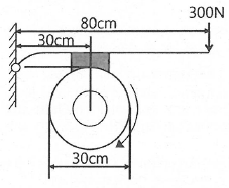
- 14
- 24
- 34
- 44
(정답률: 44%)
45. 그림과 같은 외팔보에서 폭×높이=b×h일 때, 최대굽힘응력(σmax)을 구하는 식은?
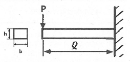
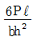
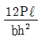
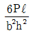
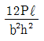
(정답률: 50%)
46. 일반적인 줄 작업 시 줄의 사용 순서로 옳은 것은?
- 유목 → 세목 → 황목 → 중목
- 유목 → 황목 → 중목 → 세목
- 황목 → 중목 → 세목 → 유목
- 황목 → 중목 → 유목 → 세목
(정답률: 61%)
47. 외경이 내경의 1.5배인 중공축이 중실축과 같은 비틀림 모멘트를 전달하고 있을 때 단면적 (중공축의 면적/중실축의 면적)비는 약 얼마인가?
- 0.76
- 0.70
- 0.64
- 0.58
(정답률: 37%)
48. 다음 중 압력 제어 밸브가 아닌 것은?
- 체크밸브
- 릴리프밸브
- 시퀸스밸브
- 압력조절밸브
(정답률: 53%)
49. 납땜에 관한 설명으로 틀린 것은?
- 사용하는 용가재의 종류에 따라 크게 연납과 경납으로 구분된다.
- 융점이 600℃ 이상인 용가재를 사용하여 납땜하는 것을 연납땜이라 한다.
- 납땜의 성패는 용접 모재인 고체와 땜납인 액체가 어느 정도의 친화력을 갖고 서로 접촉될수 있느냐에 달려있다.
- 금속을 접합하려고 할 때 접합할 모재는 용융시키지 않고 모재보다 용융점이 낮은 용가재를 사용하여 접합하는 방법이다.
(정답률: 66%)
50. 재료에 압력을 가해 다이에 통과시켜 다이구멍과 같은 모양의 긴 제품을 제작하는 가공법은?
- 단조
- 전조
- 압연
- 압출
(정답률: 61%)
51. 축방향 인장하중을 받은 균일 단면봉에서 최대 수직응력이 60MP일 때 최대 전단응력은 몇 MPa인가?
- 60
- 40
- 30
- 20
(정답률: 54%)
52. 다음 중 유동하고 있는 액체의 압력이 국부적으로 저하되어, 증기나 함유 기체를 포함하는 기포가 발생하는 현상은?
- 공동현상
- 분리현상
- 재생현상
- 수격현상
(정답률: 67%)
53. 다음 중 주물제품에서 균열(Crack)의 원인으로 가장 거리가 먼 것은?
- 주물을 급랭시킬 때
- 탕구가 매우 작을 때
- 살 두께의 차이가 너무 클 때
- 모서리가 직각으로 되어 있을 때
(정답률: 63%)
54. 리벳이음에서 강판의 효율을 나타내는 식으로 옳은 것은? (단, p는 피치, d는 리벳구멍의 지름이다.)
- p-d/p
- d-p/p
- d-p/d
- p-d/d
(정답률: 59%)
55. 안장 키(saddle key)에 대한 설명으로 옳은 것은?
- 임의의 축 위치에 키를 설치할 수 없다.
- 중심각이 120°인 위치에 2개의 키를 설치한다.
- 원형단면의 테이퍼핀 또는 평행핀을 사용한다.
- 마찰력만으로 회전력을 전달시키므로 큰 토크의 전달에는 곤란하다.
(정답률: 58%)
56. 커터의 지름이 80mm이고 커터의 날수가 8개인 정면 밀링커터로 길이 300mm의 가공물 절삭할 때 가공시간은 약 얼마인가? (단, 절삭속도 100m/min, 1날 당 이송 0.08mm로 한다.)
- 1분 15초
- 1분 29초
- 1분 52초
- 2분 20초
(정답률: 46%)
57. 실린더의 피스톤 로드에 인장하중이 걸리면 실린더는 끌리는 영향을 받게 되는데, 이러한 영향을 방지하기 위하여 인장하중이 가해지는 쪽에 설치된 밸브는?
- 리듀싱 밸브
- 시퀸스 밸브
- 언로드 밸브
- 카운터 밸런스 밸브
(정답률: 63%)
58. 지름 10㎜의 원형단면 축에 길이 방향으로 785N의 인장 하중이 걸릴 때 하중방향에 수직인 단면에 생기는 응력은 약 몇 N/mm2인가?
- 7.85
- 10
- 78.5
- 100
(정답률: 43%)
59. 축에 작각인 하중을 지지하는 베어링은?
- 피벗 베어링
- 칼라 베어링
- 레이디얼 베어링
- 스러스트 베어링
(정답률: 57%)
60. 철과 비교한 알루미늄의 특성으로 틀린 것은?
- 용융점이 낮다.
- 열전도율이 높다.
- 전기 전도성이 좋다.
- 비중이 4.5 로 철의 약 1/2 이다.
(정답률: 56%)
4과목: 전기제어공학
61. 피드백제어의 장점으로 틀린 것은?
- 목표값에 정확히 도달할 수 있다.
- 제어계의 특성을 향상시킬 수 있다.
- 외부 조건의 변화에 대한 영향을 줄일 수 있다.
- 제어기 부품들의 성능이 나쁘면 큰 영향을 받는다.
(정답률: 57%)
62. 서보드라이브에서 펄스로 지령하는 제어운전은?
- 위치제어운전
- 속도제어운전
- 토크제어운전
- 변위제어운전
(정답률: 49%)
63. 토크가 증가하면 속도가 낮아져 대체적으로 일정한 출력이 발생하는 것을 이용해서 전차, 기중기 등에 주로 하용하는 직류전동기는?
- 직권전동기
- 분권전동기
- 가동 복권전동기
- 차동 복권전동기
(정답률: 48%)
64. 다음과 같은 두 개의 교류전압이 있다. 두 개의 전압은 서로 어느 정도의 시간차를 가지고 있는가?
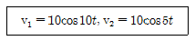
- 약 0.25초
- 약 0.46초
- 약 0.63초
- 약 0.72초
(정답률: 29%)
65. 제어하려는 물리량을 무엇이라 하는가?
- 제어
- 제어량
- 물질량
- 제어대상
(정답률: 59%)
66. 전동기에 일정 부하를 걸어 운전 시 전동기 온도 변화로 옳은 것은?
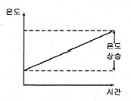
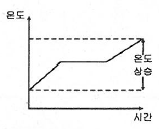
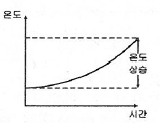
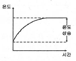
(정답률: 54%)
67. 그림과 같은 계통의 전달 함수는?
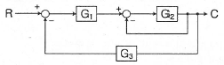
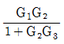
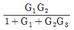
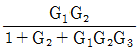
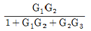
(정답률: 58%)
68. 목표값이 미리 정해진 시간적 변화를 하는 경우 제어량을 변화시키는 제어는?
- 정치 제어
- 추종 제어
- 비율 제어
- 프로그램 제어
(정답률: 50%)
69. 기계장치, 프로세스 및 시스템 등에서 제어되는 전체 또는 부분으로서 제어량을 발생시키는 장치는?
- 제어장치
- 제어대상
- 조작장치
- 검출장치
(정답률: 42%)
70. 평행하게 왕복되는 두 도선에 흐르는 전류간의 전자력은? (단, 두 도선간의 거리는 r(m)라 한다.)
- r에 비례하며 흡인력이다.
- r2에 비례하며 흡인력이다.
- 1/r에 비례하며 반발력이다.
- 1/r2에 비례하며 반발력이다.
(정답률: 36%)
71. 내부저항 r인 전류계의 측정범위를 n배로 확대하려면 전류계에 접속하는 분류기저항(Ω)값은?
- nr
- r/n
- (m-1)r
- r/(n-1)
(정답률: 59%)
72. 회로에서 A와 B간의 합성저항은 약 몇 Ω인가? (단, 각 저항의 단위는 모두 Ω이다.)
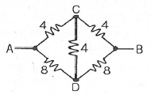
- 2.66
- 3.2
- 5.33
- 6.4
(정답률: 49%)
73. 피드백제어계에서 제어장치가 제어대상에 가하는 제어신호로 제어장치의 출력인 동시에 제어대상의 입력인 신호는?
- 목표값
- 조작량
- 제어량
- 동작신호
(정답률: 45%)
74. 입력이 011(2)일 때, 출력은 3V인 컴퓨터 제어의 D/A 변환기에서 입력을 101(2)로 하였을 때 출력은 몇 V 인가? (단, 3 bit 디지털 입력이 011(2)은 off, on, on을 뜻하고 입력과 출력은 비례한다.)
- 3
- 4
- 5
- 6
(정답률: 42%)
75. 물 20ℓ를 15℃에서 60℃로 가열하려고 한다. 이 때 필요한 열량은 몇 ㎉인가? (단, 가열시 손실은 없는 것으로 한다.)
- 700
- 800
- 900
- 1000
(정답률: 53%)
76. 제어량을 원하는 상태로 하기 위한 입력신호는?
- 제어명령
- 작업명령
- 명령처리
- 신호처리
(정답률: 58%)
77. 평행판 간격을 처음의 2배로 증가시킬 경우 정전용량 값은?
- 1/2로 된다.
- 2배로 된다.
- 1/4로 된다.
- 4배로 된다.
(정답률: 42%)
78. 그림과 같은 계전기 접점회로의 논리식은?
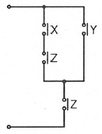
- XZ + Y
- (X + Y)Z
- (X + Z)Y
- X + Y + Z
(정답률: 49%)
79. 예비전원으로 사용되는 축전지의 내부저항을 측정할 때 가장 적합한 브리지는?
- 캠벨 브리지
- 맥스웰 브리지
- 휘트스톤 브리지
- 콜라우시 브리지
(정답률: 48%)
80. 전달함수
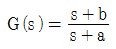
를 갖는 회로가 진상보상회로의 특성을 갖기 위한 조간으로 옳은 것은?- a＞b
- a＜b
- a＞1
- b＞1
(정답률: 43%)